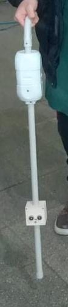
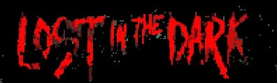

Mis Proyectos

Bastón Inteligente
Proyecto con sensores ultrasónicos, motor de vibración y Arduino. Diseñado para asistir a personas no videntes detectando obstáculos cercanos.

Videojuego 2D
Desarrollado en Godot, un videojuego interactivo con mecánicas simples. Usé lógica de programación, diseño y trabajo en equipo.

Affinity (Red Social)
Idea de red social basada en gustos compartidos, diseñada para conectar personas con intereses comunes y fomentar nuevas amistades.